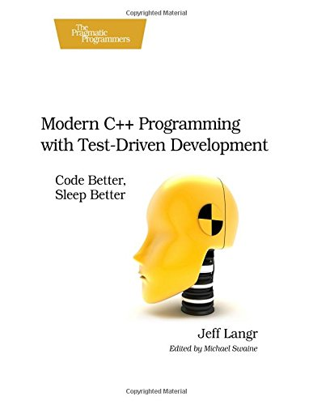
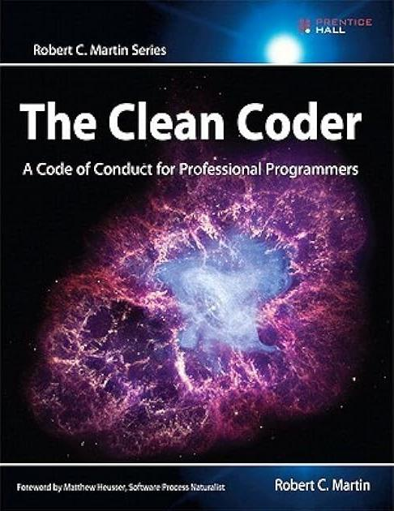

Test-driven development¶
Learning outcomes
- Understand what test-driven development is
- Be able to do test-driven development
For teachers
Video durations:
- Lecture: 4:48
is_zero: 8:19
Prerequisites are:
- Learners have practiced pair programming
- Learners can do the git basic workflow on
master
Teaching goals are:
- Learners understand what TDD is
- Learners understand why TDD is important
- Learners have done multiple TDD cycles
Teaching form used:
- Individual work
mainbranch
Prior knowledge questions:
- How do you grow/develop your code?
- How do others grow/develop their code?
- Why would it be important to have a formal way to grow/develop your code?
- When have you tested your code enough? Is it ever enough?
1. Why use test-driven development?¶
Prefer this lecture as video?
See it on YouTube.
The requirements (and hence code) of a project changes. You want to change code methodically in a time-efficient way.
2. What is test-driven development?¶
Test-driven development (TDD) is a systematic way to grow code,
used in academia and industry. It works [Martin, 2011]!

A TDD developer
When doing TDD, you do TDD cycles:

The TDD cycle
The cycle has three phases:
- Red: you write a test that fails
- Green: you make the test pass
- Blue/refactor: you refactor the code, you clean up the code, you push the code
Every cycle adds a (facet of) a new feature,
so it is a way to add features.
Alternatively, the test that fails can be an exposed bug.
In this case, there is no feature added,
but a bug is removed permanently instead.
The TDD cycles end when you cannot break
your function anymore [Beck, 2022][Langr, 2013].
The three laws of TDD ensure each cycle is short [Martin, 2007]:
- You may not write production code until you have written a failing unit test
- You may not write more of a unit test than is sufficient to fail, and not compiling is failing
- You may not write more production code than is sufficient to pass the currently failing test
Live demo¶
Give a live demo here, as suggested at a Retrospect of this day.
3. Features of TDD¶
Advantages of TDD are:
- TDD makes developers more productive
[Erdogmus & Morisio, 2005] - TDD increases quality of the code
[Erdogmus & Morisio, 2005][Alkaoud & Walcott, 2018][Janzen & Saiedian, 2006]- There are plenty of costly programming mistakes documented!
- TDD helps shape the project architecture
[Mayr, 2005] - TDD helps better modularisation
[Madeyski et al., 2010]
Developers do really do this [Beck, 2022][Langr, 2013], even
though TDD takes longer (but note [Martin, 2017][Uncle Bob, 2024]
for the same example that it is faster, but feels slower):
| Study | Extra time | Effect |
|---|---|---|
[George & Williams, 2004] |
16% | 18% more black-box tests pass |
[Bhat & Nagappan, 2006] |
15% | 2x higher code quality |
[Nagappan et al., 2008] |
15-35% | 40%-90% less defects |
We will discuss formal testing later, but now note that
testing is not about finding bugs [Thomas & Hunt, 2019, tip 66],
instead a test is the first user of your code [Thomas & Hunt, 2019, tip 67].
4. Express yourself in Python¶
This course does not teach Python. To save time, here are English statements and their Python (more-or-less) equivalent.
4.1. I assume my_function to have documentation¶
4.2. My function has documentation¶
4.3. I assume my_function to return a value, e.g. 42¶
4.4. My function returns a number, e.g. `42¶
4.5. My function returns not a number, e.g. not `42¶
4.6. I assume my_function raises an exception when given nonsense input¶
What is all this code?
We call this code 'scaffolding'. Like when repairing a building, there are scaffolds being built, it is about the building and not the scaffolding.
In our case, the scaffolding is built around this line:
This function should raise an exception. Raising an exception causes our tests to crash, so we need to 'catch' (this is a formal Python term!) the exception. This would change our code to:
Now the function my_function may or may not raise an exception.
We want the test the function to raise an exception.
The next step would be to store that is did:
And we want to test that indeed the exception is raised:
This would not compile, as has_raised has not been declared before
the try-except block, so we make it into:
has_raised = False
try:
my_function("nonsense")
except:
has_raised = True # Yay!
assert has_raised == True
We initialize has_raised with False, as, well,
no exception has been raised yet.
If no exceptions is raised, has_raised will remain False
and our test fails.
4.7. My function raises an exception when the input x is not integer¶
5. Exercises¶
Below are some TDD exercise, with the goal of practicing TDD.
Work in the src/learners folder and create a file named
after you, e.g. sven.py.
If you use R and it would help, at the 'Videos' subsection, you can find videos of doing the same in R. After seeing such a video, try to write the Python code (i.e. do not stick with writing R, how annoying this may feel).
If you feel comfortable enough with TDD, move to the next session.
5.1. Exercise 1: is_zero¶
- If you are more used to R than Python, consider watching this video, 'R and TDD: is_one'
- Watch this video called
'Programming Formalisms, session TDD, exercise 1:
is_zero' until you understand the thought process of TDD - If you want to know more about
assert, you can peek at the session about 'assert' - Develop the function
is_zero(see specifications below) yourself, using TDD To prove you've done so in an exemplary way, do agit pushat each blue/refactor phase.
is_zero
- Function name:
is_zero - Output:
- Returns
Trueif the input is zero - Returns
Falseif the input is not zero  Gives an error when the input is not a number
Gives an error when the input is not a number
- Returns
Answer
Note that the practice of TDD is the goal of the exercise, not the exact outcome.
Here is a possible solution:
def is_zero(x):
"""Determines if the input is one integer that is zero"""
if not isinstance(x, int):
raise TypeError("'x' must be of type int")
if x == 0:
return True
return False
assert is_zero.__doc__
assert is_zero(0)
assert not is_zero(1)
has_thrown = False
try:
is_zero("nonsense")
except TypeError:
has_thrown = True
assert has_thrown
5.2. Exercise 2: is_even¶
Develop a function called is_even:
is_even
- Function name:
is_even - Output:
- Returns
Trueif the input is even - Returns
Falseif the input is not even - Gives an error when the input is not a number
- Returns
That is quite similar to the previous exercise, isn't it?
Yes.
The goal of the previous exercise is to have a first try-out of examplary TDD. Most learners make a mistake in that exercise, as TDD is quite counter-intuitive to some, such as:
- use
printinstead ofassert - forgetting to push their code in the blue phase
The goal of this exercise is to be a second chance to get it right, without adding too much new Python syntax.
Answer
Note that the practice of TDD is the goal of the exercise, not the exact outcome.
Here is a possible solution:
def is_even(x):
if not isinstance(x, int):
raise TypeError("'x' must be of type int")
"""Determine if the input is one integer that is even"""
return x % 2 == 0
assert is_even.__doc__
assert is_even(2)
assert not is_even(1)
# 'is_even("nonsense")' throws a TypeError
# because of the modulo operator
has_thrown = False
try:
is_even(0.0)
except TypeError:
has_thrown = True
assert has_thrown
5.3. Exercise 3: is_odd¶
Develop a function called is_odd:
That is quite similar to the previous exercise, isn't it?
Yes.
The goal of the previous exercise is to have second chance to get it right, without adding too much new Python syntax.
The goal of this exercise is to be the first chance to go fast, without adding too much new Python syntax.
is_odd
- Function name:
is_odd - Output:
- Returns
Trueif the input is odd - Returns
Falseif the input is not odd - Gives an error when the input is not a number
- Returns
Consider using the is_even function.
Answer
Note that the practice of TDD is the goal of the exercise, not the exact outcome.
Here is a possible solution:
def is_even(x):
"""Determine if the input is one integer that is even"""
if not isinstance(x, int):
raise TypeError("'x' must be of type int")
return x % 2 == 0
assert is_even.__doc__
assert is_even(2)
assert not is_even(1)
# 'is_even("nonsense")' throws a TypeError
# because of the modulo operator
has_thrown = False
try:
is_even(0.0)
except TypeError:
has_thrown = True
assert has_thrown
def is_odd(x):
"""Determine if the input is one integer that is odd"""
return not is_even(x)
assert is_odd.__doc__
assert is_odd(1)
# Already passes, consider not putting it in
# assert not is_odd(2)
# Already passes, consider not putting it in
# has_thrown = False
# try:
# is_odd(0.0)
# except TypeError:
# has_thrown = True
# assert has_thrown
5.4. Exercise 4: is_prime¶
Develop a function called is_prime.
That is quite similar to the previous exercise, isn't it?
Yes.
The goal of the previous exercise is to go fast, without adding too much new Python syntax.
The goal of this exercise is to tackle a more complex problem and discover how few tests are needed here.
is_prime
- Function name:
is_prime - Output:
- Returns
Trueif the input is a prime number. - Returns
Falseif the input is not a prime number. - Gives an error when the input is not one number
- Returns
5.5. Exercise 5: your function¶
Think of a function you want to write, or pick one of the many example TDD functions.
Does this still work for complex functions?
Yes. TDD can always be applied.
Could you show me an example of well-tested complex functions?
Yes.
Here are some:
6. Conclusion¶
- This session, we wrote unit tests
- It is only those your boss may read
- The literature assumes a responsible programmer writes tests,
in C++
[Stroustrup & Sutter, 2017], R[Wickham, 2019]and Python[PEP 8]
7. Discussion¶
- We only test manually
- We only test on our own computer
- We are not sure if our functions are tested completely
- We do not test the code for style
- We should consider using a testing framework
Videos¶
| Title | Length | YouTube |
|---|---|---|
| TDD 1/3: TDD | 5 mins | Python |
TDD 2/3: is_zero |
16 mins | Python |
TDD 3/3: Introduce is_even |
3 mins | Python |
Solution is_even |
12 mins | Python |
| . | 12 mins | R |
TDD 2: introduce is_odd |
7 mins | Python |
Solution is_odd |
7 mins | Python |
| . | 12 mins | R |
| TDD 3: TDD bottom line | 4 mins | Python |
Solution is_prime |
9 mins | Python |
| . | . | R |
References¶
[Alkaoud & Walcott, 2018]Alkaoud, Hessah, and Kristen R. Walcott. "Quality metrics of test suites in test-driven designed applications." International Journal of Software Engineering Applications (IJSEA) 2018 (2018).

[Beck, 2022]Beck, Kent. Test driven development: By example. Addison-Wesley Professional, 2022.[Bhat & Nagappan, 2006]Bhat, Thirumalesh, and Nachiappan Nagappan. "Evaluating the efficacy of test-driven development: industrial case studies." Proceedings of the 2006 ACM/IEEE international symposium on Empirical software engineering. 2006.[Erdogmus & Morisio, 2005]Erdogmus, Hakan, Maurizio Morisio, and Marco Torchiano. "On the effectiveness of the test-first approach to programming." IEEE Transactions on software Engineering 31.3 (2005): 226-237.[George & Williams, 2004]George, Boby, and Laurie Williams. "A structured experiment of test-driven development." Information and software Technology 46.5 (2004): 337-342.[Janzen & Saiedian, 2006]Janzen, David S., and Hossein Saiedian. "Test-driven learning: intrinsic integration of testing into the CS/SE curriculum." Acm Sigcse Bulletin 38.1 (2006): 254-258.

[Langr, 2013]Langr, Jeff. Better, Code, and Sleep Better. "Modern C++ Programming with Test-Driven Development." (2013).[Madeyski et al., 2010]Madeyski, Lech, and Gestión de sistemas de información. Test-driven development: An empirical evaluation of agile practice. Heidelberg: Springer, 2010.[Martin, 2007]Martin, Robert C. "Professionalism and test-driven development." IEEE Software 24.3 (2007): 32-36.[Martin, 2009]Martin, Robert C. Clean code: a handbook of agile software craftsmanship. Pearson Education, 2009.

[Martin, 2011]Martin, Robert C. The clean coder: a code of conduct for professional programmers. Pearson Education, 2011.[Martin, 2017]Martin, Robert C. "Clean architecture." 12 Sep. 2017,[Mayr, 2005]Mayr, Herwig. Projekt Engineering: Ingenieurmäßige Softwareentwicklung in Projektgruppen. Hanser Verlag, 2005.[Nagappan et al., 2008]Nagappan, Nachiappan, et al. "Realizing quality improvement through test driven development: results and experiences of four industrial teams." Empirical Software Engineering 13 (2008): 289-302.[PEP 8]Van Rossum, Guido, Barry Warsaw, and Nick Coghlan. "PEP 8–style guide for python code." Python. org 1565 (2001): 28.[Stroustrup & Sutter, 2017]Stroustrup, Bjarne, and Herb Sutter. "C++ Core Guidelines (2017)." Website. (Cited on pages 100 and 103) (2015).[study I cannot find]in one of the classics, there was a bar chart that showed developers write functions such asis_primewith and without TDD and showed that TDD was twice as fast. TODO: find this reference

[Thomas & Hunt, 2019]Thomas, David, and Andrew Hunt. The Pragmatic Programmer: your journey to mastery. Addison-Wesley Professional, 2019.[Wickham, 2019]Wickham, Hadley. Advanced R. Chapman and Hall/CRC, 2019.

[Yuan et al., 2014]Yuan, Ding, et al. "Simple testing can prevent most critical failures: An analysis of production failures in distributed data-intensive systems." 11th USENIX Symposium on Operating Systems Design and Implementation (OSDI 14). 2014.-
[Zen of Python]Zen Of Python: 'Errors should never pass silently' -
[Uncle Bob, 2024]YouTube video 'Is Test Driven Development Slow?' by Uncle Bob